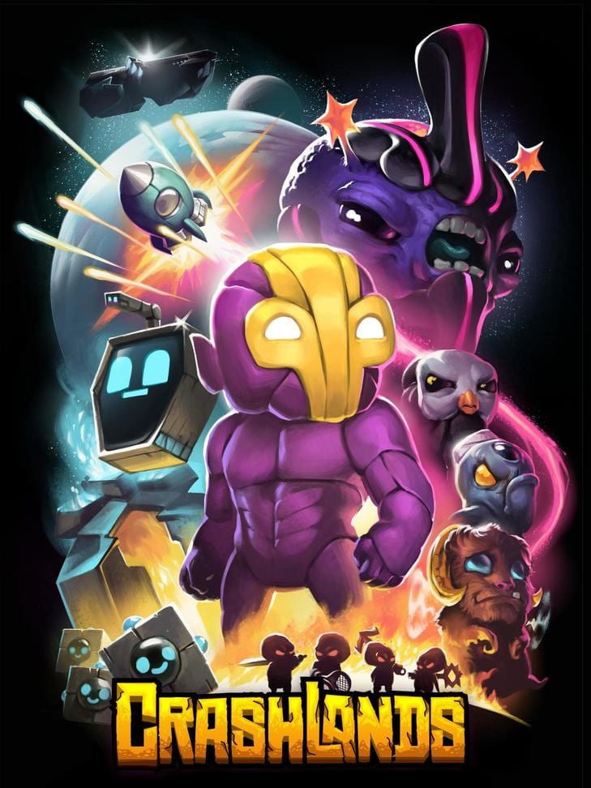

Crashlands
Crashlands
Details
|  | |
| Playtime | Not Played |
| Last Activity | Never |
| Added | 2/16/2022 17:42:11 |
| Modified | 2/16/2022 17:42:22 |
| Completion Status | Not Played |
| Library | Steam |
| Source | Steam |
| Platform | PC (Windows) |
| Release Date | 1/21/2016 |
| Community Score | 70 |
| Critic Score | 80 |
| User Score | |
| Genre | Action Adventure Indie RPG |
| Developer | Butterscotch Shenanigans |
| Publisher | Butterscotch Shenanigans |
| Feature | Co-Operative Multiplayer Single Player |
| Links | PCGamingWiki Official site GOG Database HowLongToBeat IGDB IsThereAnyDeal ProtonDB SteamDB MobyGames Wikipedia WineHQ WSGF |
| Tag | |
Description
TIME Magazine Top 10 Games of 2016
"Usually I can say what a game IS and be done, but it's hard to figure out what Crashlands ISN'T. It's a funny, crafty, fighty, jumpy, makey, adventurey, type... thing. I think they started making a cool game and just couldn't stop. " - Tycho, Penny Arcade
Crash land and craft, battle, and quest your way through this story-driven Crafting ARPG overflowing with sass!
Become Flux Dabes, a galactic trucker whose latest shipment gets derailed by a chin-strapped alien menace named Hewgodooko, leaving you stranded on an alien planet. As you hustle to retrieve your packages you’ll become enmeshed in a nefarious plot of world domination, which will require all of your wits and both of your glutes to overcome. Learn recipes from the local sentient life, make new friends, uncover ancient secrets and deadly bosses, tame everything and build yourself a home-away-from-home as you learn to thrive after crash landing on planet Woanope.
Juicebox's S.T.R.A.W.™ not only harvests resources but also brings additional firepower to the battlefield. But watch out, the enemies are gonna try to kick his robotic butt too now!

But Juicebox has a few special moves up his mechanical sleeves...


Unlock over 500 craftable items as you explore the world and learn its secrets!
Self-managing, Infinite Inventory
Your inventory is infinite, manages itself, and retrieves your tools when you need them, so you can focus on adventuring, questing, and building. You'll never dig through your bag or return to your base to free up inventory space - giving you more time to thrive after crash landing!
RPG-Style Character Progression
Become more powerful through creating ever-more-amazing items! As you grow in power, you can venture to new regions of the world, meet strange characters, discover new stories, and encounter new and interesting enemies.
Skill-Based Combat
Learn the attacks of the enemies you encounter, and use your skill, agility, and wits to defeat them! You can even augment your fighting prowess with the power of the dozens of gadgets you can craft. Set your enemies on fire, stun them, slow down time, and more!
Intuitive Base Building
Building a base in Crashlands is so simple it feels like fingerpainting. You can create beautiful, sprawling bases in minutes!
Tameable Creatures
Every creature in Crashlands can become a trusty combat sidekick. Find an egg, incubate it, and hatch your very own adorable or hideous bundle of joy. You can even craft special items to grow and empower them!
Huge World... with Huge Problems
Crash land on a planet with four sentient races, three continents, an epic bid for the future of the planet, and you - trapped in the middle, trying to deliver your freakin' packages. Take your time to dive into the sidestories of the characters you meet or just rush headlong into making that special delivery. With hundreds upon hundreds of quests, there's a lot to do and discover on planet Woanope!
Crossplatforminess
Don't want the fun to stop? Crashlands is also available on mobile - the exact same game, with your cloud-synced progress - so you never have to stop!
"Usually I can say what a game IS and be done, but it's hard to figure out what Crashlands ISN'T. It's a funny, crafty, fighty, jumpy, makey, adventurey, type... thing. I think they started making a cool game and just couldn't stop. " - Tycho, Penny Arcade
Crash land and craft, battle, and quest your way through this story-driven Crafting ARPG overflowing with sass!
Become Flux Dabes, a galactic trucker whose latest shipment gets derailed by a chin-strapped alien menace named Hewgodooko, leaving you stranded on an alien planet. As you hustle to retrieve your packages you’ll become enmeshed in a nefarious plot of world domination, which will require all of your wits and both of your glutes to overcome. Learn recipes from the local sentient life, make new friends, uncover ancient secrets and deadly bosses, tame everything and build yourself a home-away-from-home as you learn to thrive after crash landing on planet Woanope.
Player 2 can now play as Juicebox!
Juicebox's S.T.R.A.W.™ not only harvests resources but also brings additional firepower to the battlefield. But watch out, the enemies are gonna try to kick his robotic butt too now!
But Juicebox has a few special moves up his mechanical sleeves...
Happy Juiceboxing with your friend!
Key Features
Expansive Crafting SystemUnlock over 500 craftable items as you explore the world and learn its secrets!
Self-managing, Infinite Inventory
Your inventory is infinite, manages itself, and retrieves your tools when you need them, so you can focus on adventuring, questing, and building. You'll never dig through your bag or return to your base to free up inventory space - giving you more time to thrive after crash landing!
RPG-Style Character Progression
Become more powerful through creating ever-more-amazing items! As you grow in power, you can venture to new regions of the world, meet strange characters, discover new stories, and encounter new and interesting enemies.
Skill-Based Combat
Learn the attacks of the enemies you encounter, and use your skill, agility, and wits to defeat them! You can even augment your fighting prowess with the power of the dozens of gadgets you can craft. Set your enemies on fire, stun them, slow down time, and more!
Intuitive Base Building
Building a base in Crashlands is so simple it feels like fingerpainting. You can create beautiful, sprawling bases in minutes!
Tameable Creatures
Every creature in Crashlands can become a trusty combat sidekick. Find an egg, incubate it, and hatch your very own adorable or hideous bundle of joy. You can even craft special items to grow and empower them!
Huge World... with Huge Problems
Crash land on a planet with four sentient races, three continents, an epic bid for the future of the planet, and you - trapped in the middle, trying to deliver your freakin' packages. Take your time to dive into the sidestories of the characters you meet or just rush headlong into making that special delivery. With hundreds upon hundreds of quests, there's a lot to do and discover on planet Woanope!
Crossplatforminess
Don't want the fun to stop? Crashlands is also available on mobile - the exact same game, with your cloud-synced progress - so you never have to stop!